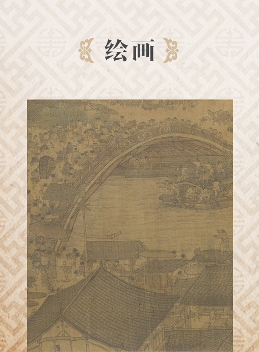
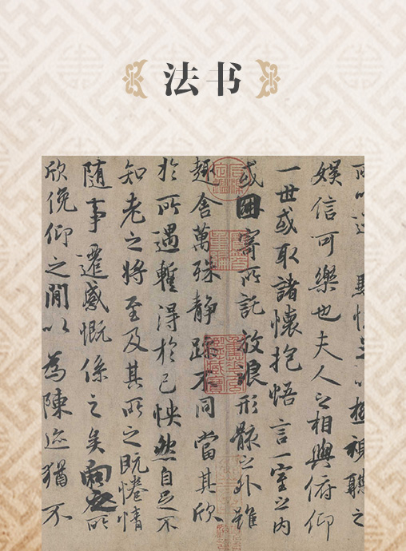

数以百万计的珍贵藏品鉴赏
故宫博物院”既是明清故宫（紫禁城）建筑群与宫廷史迹的保护管理机构，也是以明清皇室旧藏文物为基础的中国古代文化艺术品的收藏、研究和展示机构。“故宫博物院”院藏文物体系完备、涵盖古今、品质精良、品类丰富。现有藏品总量已达180余万件（套），以明清宫廷文物类藏品、古建类藏品、图书类藏品为主。藏品总分25种大类别，其中一级藏品8000余件（套），堪称艺术的宝库。
文物号即馆藏文物的登记号，是每件文物唯一标识，不会重复使用。文物名称是编目人员根据文物特征进行的定名，在展示利用时，可能会根据最新研究成果或便于观众理解的角度进行适当调整，与《藏品总登记账》上的名称和类别有所不同。

- 
- 